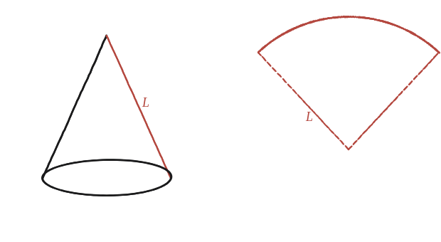
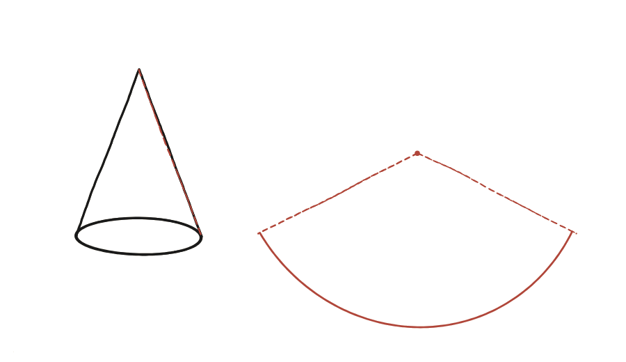

Com podem mesurar l'àrea de la superfície d'un con?
Un avís abans de començar
Com sempre en un dibuix en perspectiva, la base del con no sembla un cercle. És un cercle de veritat.
El truc de q45 no funciona igual
A la qüestió 45, en desenrotllar un cilindre en va sortir un rectangle. Provant el mateix amb un con —tallant-lo des de la punta fins a la vora de la base, en línia recta, i estirant-lo pla—, ja no en surt un rectangle: en surt un tros de cercle, un sector. Quin radi té aquest sector? I quina llargada d'arc?

La construcció

Tancar-ho
El radi del sector és exactament la llargada de la línia tallada —l'aresta inclinada del con des de la punta fins a la vora, anomenada generatriu o alçada inclinada, L. L'arc del sector ha de fer, en longitud, exactament la circumferència de la base (2πr), ja que abans d'estirar-lo el con era la vora d'aquella base. Un sector de cercle de radi L amb arc de longitud 2πr té àrea (1/2)×L×(2πr) = πrL —la mateixa fórmula "base × alçada / 2" que serveix per a qualsevol sector.
L'àrea lateral d'un con és πrL, on r és el radi de la base i L la generatriu (l'aresta inclinada): en desenrotllar el con surt un sector de cercle de radi L i arc de longitud 2πr.
Comprovació
Amb r=3, L=8: l'angle del sector és 2π(3)/8 = 3π/4 (135°). Àrea lateral = πrL = π×3×8 = 24π ≈ 75,4. Comprovant-ho també amb la fórmula del sector: (1/2)×8²×(3π/4) = (1/2)×64×2,356 = 75,4 ✓.
A diferència del cilindre, aquí l'"amplada" de la superfície desenrotllada no és constant —és un arc, no un segment recte. Aquesta diferència és exactament el que fa que el con, a diferència del cilindre, no es pugui "desenrotllar" en un rectangle.